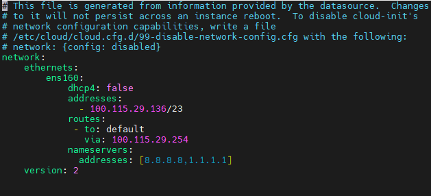

Configuration VM / GitLab local
Le serveur est mis sur VSphere. Il a fallu configurer le serveur US22 en y renseignant nos adresses IP, la passerelle et la route.
Après vérification de la communication avec internet, nous avons téléchargé GitLab sur la machine virtuelle. Il est ensuite accessible en saisissant notre IP dans le navigateur.
Configuration de la VM sur VSphere

GitLab local sur la VM